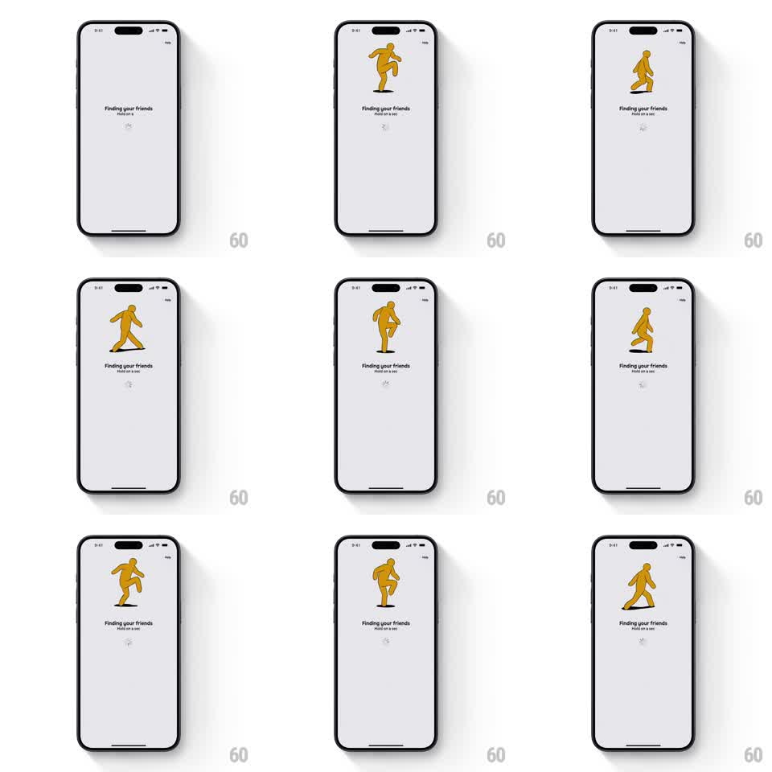

Media
Frame-by-frame

Rebuild this animation 1:1: Stompers' finding-friends loader - a chunky orange mascot stomps in place frame-by-frame while a tiny spinner rotates under the "Finding your friends" copy.

Rebuild this animation 1:1: Stompers' finding-friends loader - a chunky orange mascot stomps in place frame-by-frame while a tiny spinner rotates under the "Finding your friends" copy. ## Integration Integration: stack-agnostic spec - springs given as stiffness/damping, timed motions as duration + curve; map every value to your framework and animation library of choice. ## Scene Pale lavender loading screen: a large mascot illustration upper-center, "Finding your friends" headline with "Hold on a sec" subcopy, a small spinner below, and a Help link in the top-right. ## Motion spec Pattern: frame-by-frame stomp loop, ~1s cycle. - The mascot runs a ~6-frame hand-drawn walk cycle (frames swap every ~160ms, no tweening): legs scissor wide, knees lift high, arms swing opposite, the body squashing ~6% on each footfall. - The whole figure bobs +-4px on the footfall beat; a small ground shadow squashes in sync. - Below the copy, a spinner rotates continuously (~1s per turn). - The loop runs until content is ready, then the mascot does one final big stomp and the screen transitions. ## Calibration - Frame swapping is stepped, never interpolated - the flipbook flicker is the style. - Footfalls land on a strict beat; drifting timing reads as a broken loop. ## Reduced motion Mascot holds a mid-stride frame; spinner still rotates. ## Don't miss - The mascot faces and walks toward screen-left, in place - it never travels. - The squash on footfall is what sells the stomp; a rigid body reads as a walk, not a stomp.